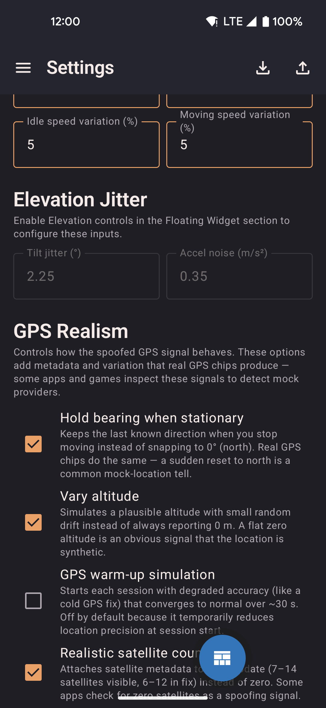

Settings
Configure speed profiles, GPS realism, widget controls, and data export/import.

- Edit Walk, Run, and Bike speed presets used by the joystick, routes, and roaming.
- Toggle GPS realism features independently: bearing hold, altitude drift, warm-up envelope, satellite count, signal dropouts.
- Choose which controls appear in the floating widget.
More settings

- Configure roaming defaults: radius, distance, speed profile, and road-following preference.
- Export all data (routes, favorites, profiles) to a JSON file or import a previous backup.
- Import data from GPS Joystick or YAMLA to migrate in seconds.
QR transfer
Share your entire configuration between devices by scanning a sequence of QR codes — no cables, no accounts, no cloud.

- Export splits your data into multiple QR codes; swipe through them on the sending device.
- The receiving device scans each code in sequence; import starts automatically when all chunks are collected.
- Works entirely offline between two devices in the same room.